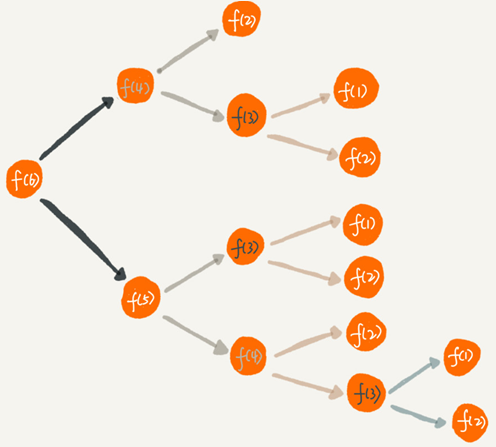

如何理解“递归”？
递归是一种非常高效、简洁的编码技巧，不过递归代码也比较难写、难理解。编写递归代码的关键就是不要把自己绕进去，正确姿势是写出递推公式，找出终止条件，然后再翻译成递归代码。
不过递归代码也比较难写、难理解。编写递归代码的关键就是不要把自己绕进去，正确姿势是写出递推公式，找出终止条件，然后再翻译成递归代码。
递归代码虽然简洁高效，但是，递归代码也有很多弊端。比如，堆栈溢出、重复计算、函数调用耗时多、空间复杂度高等，所以，在编写递归代码的时候，一定要控制好这些副作用。
很多数据结构和算法的编码实现都要用到递归，比如 DFS 深度优先搜索、前中后序二叉树遍历等。
一个生活中用到递归的例子：
周末你带着女朋友去电影院看电影，女朋友问你，咱们现在坐在第几排啊？电影院里面太黑了，看不清，没法数，现在你怎么办？于是你就问前面一排的人他是第几排，你想只要在他的数字上加一，就知道自己在哪一排了。但是，前面的人也看不清啊，所以他也问他前面的人。就这样一排一排往前问，直到问到第一排的人，说我在第一排，然后再这样一排一排再把数字传回来。直到你前面的人告诉你他在哪一排，于是你就知道答案了。
这就是一个非常标准的递归求解问题的分解过程，去的过程叫“递”，回来的过程叫“归”。基本上，所有的递归问题都可以用递推公式来表示。这个例子，用递推公式将它表示出来就是这样的：
f(n)=f(n-1)+1 其中，f(1)=1f(n) 表示你想知道自己在哪一排，f(n-1) 表示前面一排所在的排数，f(1)=1 表示第一排的人知道自己在第一排。有了这个递推公式，就可以很轻松地将它改为递归代码，如下：
int f(int n) {
if (n == 1) return 1;
return f(n-1) + 1;
}递归需要满足的三个条件
满足三个条件的问题可以用递归来解决：
1. 一个问题的解可以分解为几个子问题的解
子问题就是数据规模更小的问题。比如，前面讲的电影院的例子，你要知道，“自己在哪一排”的问题，可以分解为“前一排的人在哪一排”这样一个子问题。
2. 这个问题与分解之后的子问题，除了数据规模不同，求解思路完全一样
比如电影院那个例子，求解“自己在哪一排”的思路，和前面一排人求解“自己在哪一排”的思路，是一模一样的。
3. 存在递归终止条件
把问题分解为子问题，把子问题再分解为子子问题，一层一层分解下去，不能存在无限循环，这就需要有终止条件。
还是电影院的例子，第一排的人不需要再继续询问任何人，就知道自己在哪一排，也就是 f(1)=1，这就是递归的终止条件。
如何编写递归代码？
写递归代码最关键的是写出递推公式，找到终止条件。
假如这里有 n 个台阶，每次你可以跨 1 个台阶或者 2 个台阶，请问走这 n 个台阶有多少种走法？如果有 7 个台阶，你可以 2，2，2，1 这样子上去，也可以 1，2，1，1，2 这样子上去，总之走法有很多，那如何用编程求得总共有多少种走法呢？
可以根据第一步的走法把所有走法分为两类，第一类是第一步走了 1 个台阶，另一类是第一步走了 2 个台阶。所以 n 个台阶的走法就等于先走 1 阶后n-1 个台阶的走法，加上先走 2 阶后n-2 个台阶的走法。用公式表示就是：
f(n) = f(n-1)+f(n-2)再来看终止条件:
当有一个台阶时，就不需要再继续递归，就只有一种走法。所以 f(1)=1。
再用 n=2，n=3 这样比较小的数试验一下这个递归终止条件是否足够：
n=2 时，f(2)=f(1)+f(0)。如果递归终止条件只有一个 f(1)=1，那 f(2) 就无法求解了。所以除了 f(1)=1 这一个递归终止条件外，还要有 f(0)=1，表示走 0 个台阶有一种走法，不过这样子看起来又不符合正常的逻辑思维。所以可以把 f(2)=2 作为一种终止条件，表示走 2 个台阶，有两种走法，一步走完或者分两步来走。
所以，递归终止条件就是 f(1)=1，f(2)=2。这时再拿 n=3，n=4 来验证一下，这个终止条件是否足够并且正确。
把递归终止条件和刚刚得到的递推公式放到一起就是这样的：
f(1) = 1;
f(2) = 2;
f(n) = f(n-1)+f(n-2)有了这个公式，我们转化成递归代码就简单多了。最终的递归代码是这样的：
int f(int n) {
if (n == 1) return 1;
if (n == 2) return 2;
return f(n-1) + f(n-2);
}写递归代码的关键就是找到如何将大问题分解为小问题的规律，并且基于此写出递推公式，然后再推敲终止条件，最后将递推公式和终止条件翻译成代码。
第二个例子，人脑几乎没办法把整个“递”和“归”的过程一步一步都想清楚。
正确的理解递归的思维方式：
如果一个问题 A 可以分解为若干子问题 B、C、D，先假设子问题 B、C、D 已经解决，在此基础上思考如何解决问题 A。只需要思考问题 A 与子问题 B、C、D 两层之间的关系即可，不要一层一层往下思考子问题与子子问题，子子问题与子子子问题之间的关系。屏蔽掉递归细节，这样理解起来就简单多了。
因此，编写递归代码的关键是，只要遇到递归，就把它抽象成一个递推公式，不用想一层层的调用关系，不要试图用人脑去分解递归的每个步骤。
递归代码要警惕堆栈溢出
函数调用会使用栈来保存临时变量。每调用一个函数，都会将临时变量封装为栈帧压入内存栈，等函数执行完成返回时，才出栈。如果递归求解的数据规模很大，调用层次很深，一直压入栈，就会有堆栈溢出的风险。
上面的讲的电影院的例子，如果将系统栈或者 JVM 堆栈大小设置为 1KB，在求解 f(19999) 时便会出现如下堆栈报错：
Exception in thread "main" java.lang.StackOverflowError那么，如何避免出现堆栈溢出呢？
方法之一是在代码中限制递归调用的最大深度，递归调用超过一定深度（比如 1000）之后，就直接返回报错。
电影院那个例子，可以改造成下面这样子，就可以避免堆栈溢出了：
// 全局变量，表示递归的深度。
int depth = 0;
int f(int n) {
++depth；
if (depth > 1000) throw exception;
if (n == 1) return 1;
return f(n-1) + 1;
}但这种做法并不能完全解决问题，因为最大允许的递归深度跟当前线程剩余的栈空间大小有关，事先无法计算。如果实时计算，代码过于复杂，就会影响代码的可读性。所以，如果最大深度比较小，比如 10、50，就可以用这种方法，否则这种方法并不实用。
递归代码要警惕重复计算
刚才第二个递归代码的例子把整个递归过程分解一下：

从图中，可以看到要计算 f(5)，需要先计算 f(4) 和 f(3)，而计算 f(4) 还需要计算 f(3)，因此，f(3) 就被计算了很多次，这就是重复计算问题。
为了避免重复计算，我们可以通过一个数据结构（比如散列表）来保存已经求解过的 f(k)。当递归调用到 f(k) 时，先看下是否已经求解过了。如果是，则直接从散列表中取值返回，不需要重复计算。
public int f(int n) {
if (n == 1) return 1;
if (n == 2) return 2;
// hasSolvedList 可以理解成一个 Map，key 是 n，value 是 f(n)
if (hasSolvedList.containsKey(n)) {
return hasSovledList.get(n);
}
int ret = f(n-1) + f(n-2);
hasSovledList.put(n, ret);
return ret;
}在时间效率上，递归代码里多了很多函数调用，当这些函数调用的数量较大时，就会积聚成一个可观的时间成本。在空间复杂度上，因为递归调用一次就会在内存栈中保存一次现场数据，所以在分析递归代码空间复杂度时，需要额外考虑这部分的开销，比如电影院递归代码，空间复杂度是 O(n)。
将递归代码改写为非递归代码
递归代码的表达力很强，写起来非常简洁，但是空间复杂度高、有堆栈溢出的风险、存在重复计算、过多的函数调用会耗时较多等问题。所以，应当根据实际情况尽量把递归代码改写为非递归代码。
只看 f(x) =f(x-1)+1 这个递推公式。可以这样改写：
int f(int n) {
int ret = 1;
for (int i = 2; i <= n; ++i) {
ret = ret + 1;
}
return ret;
}第二个例子也可以改为非递归的实现：
int f(int n) {
if (n == 1) return 1;
if (n == 2) return 2;
int ret = 0;
int pre = 2;
int prepre = 1;
for (int i = 3; i <= n; ++i) {
ret = pre + prepre;
prepre = pre;
pre = ret;
}
return ret;
}那是不是所有的递归代码都可以改为这种迭代循环的非递归写法呢？
因为递归本身就是借助栈来实现的，如果自己在内存堆上实现栈，手动模拟入栈、出栈过程，这样任何递归代码都可以改写成看上去不是递归代码的样子。但是这种思路实际上是将递归改为了“手动”递归，徒增了实现的复杂度。
如何用三行代码找到“最终推荐人”？
推荐注册返佣金这个功能中，用户 A 推荐用户 B 来注册，用户 B 又推荐了用户 C 来注册。则用户 C 的“最终推荐人”为用户 A，用户 B 的“最终推荐人”也为用户 A，而用户 A 没有“最终推荐人”。
可以通过数据库来记录这种推荐关系，其中 actor_id 表示用户 id，referrer_id 表示推荐人 id。
| actor_id | referrer_id |
|---|---|
| B | A |
| C | B |
给定一个用户 ID，如何查找这个用户的“最终推荐人”？
java递归伪代码实现：
long findRootReferrerId(long actorId) {
Long referrerId = select referrer_id from [table] where actor_id = actorId;
if (referrerId == null) return actorId;
return findRootReferrerId(referrerId);
}递归用三行代码就能搞定了，不过在实际项目中，上面的代码并不能工作。
第一，如果递归很深，可能会有堆栈溢出的问题。
第二，如果数据库里存在脏数据，我们还需要处理由此产生的无限递归问题。比如 demo 环境下数据库中，测试工程师为了方便测试，会人为地插入一些数据，就会出现脏数据。如果 A 的推荐人是 B，B 的推荐人是 C，C 的推荐人是 A，这样就会发生死循环。
前两种问题都可以用限制递归深度来解决，
第二种问题还可以检测 A-B-C-A 这种“环”，上面的伪代码可以改写为
可以利用python的set进行检测：
def find_root_referrer_id(actorId: int, relation: set):
relation.add(actorId)
referrerId = cursor.execute(r"select referrer_id from user_info where actor_id = %s", actorId)
if referrerId in relation or referrerId == None:
return actorId
return find_root_referrer_id(referrerId)斐波那契数列
斐波那契数列（Fibonacci sequence），又称黄金分割数列，指的是这样一个数列：0、1、1、2、3、5、8、13、21、34、……。
在数学上，费波那契数列是以递归的方法来定义：
F(0)=0(n=0)
F(1)=1(n=1)
F(n)=F(n-1)+F(n-2) (n>=2，n∈N*)python实现：
def fib(n):
if n <= 1:
return n
return fib(n - 1) + fib(n - 2)树形显示目录
利用递归实现类似linux下的tree命令的效果，例如：
static
|--css
| |--addons
| | |--uikit.addons.min.css
| | |--uikit.almost-flat.addons.min.css
| | `--uikit.gradient.addons.min.css
| |--awesome.css
| |--uikit.almost-flat.min.css
| |--uikit.gradient.min.css
| `--uikit.min.css
|--fonts
| |--fontawesome-webfont.eot
| |--fontawesome-webfont.ttf
| |--fontawesome-webfont.woff
| `--FontAwesome.otf
|--img
| `--user.png
|--js
| |--awesome.js
| |--jquery.min.js
| |--sha1.min.js
| |--sticky.min.js
| |--uikit.min.js
| `--vue.min.js
`--README
templates
|--blog.html
|--blogs.html
|--manage_blogs.html
|--manage_blog_edit.html
|--manage_comments.html
|--manage_users.html
|--register.html
|--signin.html
`--__base__.html代码：
# -*- coding: utf-8 -*-
__author__ = 'xiaoxiaoming'
import os
def tree_dir(dir, layer=0):
listdir = os.listdir(dir)
for index, file in enumerate(listdir):
file_path = os.path.join(dir, file)
print("| " * (layer - 1), end="")
if (layer > 0):
print("`--" if index == len(listdir) - 1 else "|--", end="")
print(file)
if (os.path.isdir(file_path)):
tree_dir(file_path, layer + 1)
tree_dir("..")